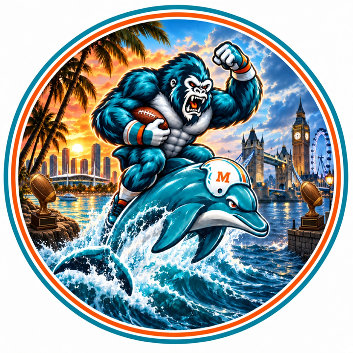

The Fins Maniacs 5–3 at Mia Hamsters 4–4
Mia Hamsters just took No. 1 after Joe Burrow threw for 462 yards and six touchdowns and hung 165 on Halloween Greaseheads. The Fins Maniacs come in off Jahmyr Gibbs's 30-yard score, with Patrick Mahomes's three touchdowns left on the bench. The new No. 1 hosts the team climbing back into the top four.
-
1▲ 2Mia Hamsters Wk 7: 34–4 · Salois & Yaggy 4th · 1004 PF · W 165–92 vs Halloween Greaseheads
Joe Burrow completed 38 of 48 passes for 462 yards and five touchdowns and ran one in during overtime. Ja'Marr Chase caught 11 passes for 141 yards and a score, and Mia Hamsters hung 165 on Halloween Greaseheads.
-
2▼ 1
 New England Patriots Wk 7: 16–2 · Salois & Yaggy 1st · 960 PF · L 104–127 vs Team We Are Here
New England Patriots Wk 7: 16–2 · Salois & Yaggy 1st · 960 PF · L 104–127 vs Team We Are HereJaxon Smith-Njigba scored from 43 yards, Lamar Jackson's only pass fell incomplete, and Bijan Robinson ran for 76 yards without a touchdown. Team We Are Here beat New England Patriots and ended the stay at No. 1.
-
3▼ 1
 The Mitchell Mishaps Wk 7: 25–3 · Salois & Yaggy 2nd · 1008 PF · W 128–67 vs Dirk's Squad
The Mitchell Mishaps Wk 7: 25–3 · Salois & Yaggy 2nd · 1008 PF · W 128–67 vs Dirk's SquadD'Andre Swift carried 27 times for 69 yards and three touchdowns, and Michael Wilson and Trey McBride each caught a score. The Mitchell Mishaps turned that day into a rout of Dirk's Squad.
-
4▲ 1The Fins Maniacs Wk 7: 55–3 · Salois & Yaggy 3rd · 930 PF · W 100–93 vs The Dylan Panthers
Jahmyr Gibbs scored from 30 yards and Justin Jefferson caught a touchdown as The Fins Maniacs edged The Dylan Panthers. Patrick Mahomes threw for 321 yards and three scores and stayed on the bench.
-
5▲ 2Omar Malik / Gooch Canal Wk 7: 73–4–1 · Salois & Yaggy 5th · 953 PF · W 139–135 vs The Short Bus Crew
Brock Bowers scored twice, and Jaylen Warren and Jonah Coleman each ran one in, Coleman in his first week with the club. Gooch Canal won the week's closest game over The Short Bus Crew without starting a defense.
-
6▲ 3
 Team We Are Here Wk 7: 93–4–1 · Holler 2nd · 882 PF · W 127–104 vs New England Patriots
Team We Are Here Wk 7: 93–4–1 · Holler 2nd · 882 PF · W 127–104 vs New England PatriotsTee Higgins caught 10 passes for 155 yards and two touchdowns, and Chuba Hubbard ran for 81 yards and a score. Team We Are Here used that to knock New England Patriots off the top of the rankings.
-
7▼ 3
 The Dylan Panthers Wk 7: 43–5 · Holler 3rd · 946 PF · L 93–100 vs The Fins Maniacs
The Dylan Panthers Wk 7: 43–5 · Holler 3rd · 946 PF · L 93–100 vs The Fins ManiacsJosh Allen completed 21 of 34 passes for 289 yards and two touchdowns and ran one in, and Dalton Kincaid scored from 23 yards. The featured backs never broke the game open, and The Dylan Panthers lost the one-score game.
-
8—
 The Short Bus Crew Wk 7: 83–5 · Holler 4th · 893 PF · L 135–139 vs Omar Malik / Gooch Canal
The Short Bus Crew Wk 7: 83–5 · Holler 4th · 893 PF · L 135–139 vs Omar Malik / Gooch CanalPuka Nacua scored from 18 yards, and Bucky Irving and Derrick Henry each ran one in. The Short Bus Crew put up a heavy score and still lost the week's closest game to Gooch Canal.
-
9▼ 3
 Halloween Greaseheads Wk 7: 63–5 · Holler 5th · 874 PF · L 92–165 vs Mia Hamsters
Halloween Greaseheads Wk 7: 63–5 · Holler 5th · 874 PF · L 92–165 vs Mia HamstersDrake Maye scored on a 2-yard run, but Mia Hamsters turned the afternoon into the week's blowout. Tony Pollard ran for 117 yards and two touchdowns on the bench, the second straight week Halloween Greaseheads left him there.
-
10—
 Dirk's Squad Wk 7: 104–4 · Holler 1st · 834 PF · L 67–128 vs The Mitchell Mishaps
Dirk's Squad Wk 7: 104–4 · Holler 1st · 834 PF · L 67–128 vs The Mitchell MishapsGeno Smith threw for 290 yards and two touchdowns, and Dirk's Squad still posted the week's low score. Kyren Williams's 1-yard run was the only touchdown around him, a fourth straight loss.